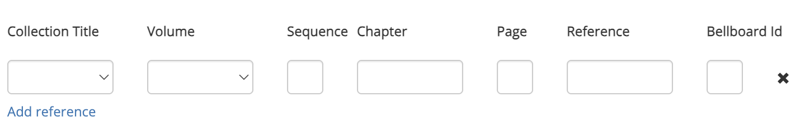

The References tab
This tab is a table which allows you to link a custom composition to a Collection. On this page, it will be assumed that you are familiar with collections on Complib and how they work.
Since it is not necessary to add anything to the References tab when creating a custom composition, it is safe to ignore this tab unless you have good reason.
Spurious references
Many public collections contain historical data sourced and organised by hand. This can be a rather thankless task, and can be seriously disrupted by the addition of spurious references.
Please do not add a composition to a public collection which you do not own unless there is a justifiable reason for its inclusion.
Click Add reference to add an empty reference:

Clicking the cross will delete the reference.
References have a number of data fields, most of which are optional.
Collection title
The title of the collection in which the composition is to be included. This field is a drop-down menu from which you can select the name of any public collection, or any private collection which you own. Required.
Volume
This field is a drop-down menu which allows you to select the relevant volume from the collection, for collections which are organised into volumes.
Sequence
Allows you to specify a sequence number, a positive integer that determines the order in which entries are displayed on a collection page. Smaller numbers have priority over bigger ones.
Chapter
This field is a drop-down menu which allows you to select a chapter from the named collection, if it is organised by chapters.
Page
The page number of the entry in the collection. This is usually the page number of the source material (e.g. Ringing World issue, CCCBR publication) which forms the basis for the reference.
Reference
The external reference for the entry in the collection. Usually a relative reference to a digital source (e.g. a ringing.org composition number). The entry in this field is appended to the URL specified on the Collection Properties page for the creation of Reference Links.
Bellboard Id
The ID of a BellBoard performance which references the composition. (PD: Have been unable to find an example of this being used, so not entirely sure what it does, if it differs at all from a performance reference.)